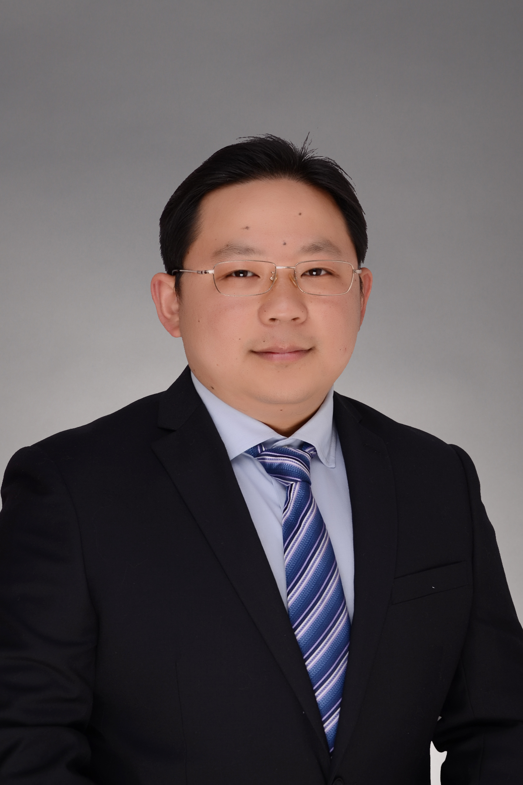

Pediatric TCM in Shanghai
Natural, gentle care for your child's long-term health.
Traditional Chinese Medicine support for children with recurrent cough, allergies, weak digestion, poor sleep and respiratory concerns, guided by an experienced Shanghai pediatric TCM physician.

Dr. Zhoujian Yang
Chief TCM Physician
Shanghai-style Pediatric TCM lineage
Common concerns
Support for the health problems foreign parents often search for.
The goal is not only to respond to a symptom, but to understand why it keeps returning and how your child's body can become more resilient over time.
Why Pediatric TCM
A holistic view of your child's body, not just one symptom.
Pediatric TCM looks at breathing, digestion, sleep, sweating, bowel movements, growth pattern, energy and allergy tendency together. This helps build a care plan that fits the child, not only the diagnosis name.
Detailed family consultation
Review symptoms, medical history, triggers, medications, daily routine and seasonal patterns.
TCM constitution assessment
Tongue, pulse and whole-body signs are considered alongside the child's current concern.
Gentle treatment plan
Pediatric Tuina, herbal medicine when appropriate, diet advice and home-care guidance may be used.
Follow-up for recurrence prevention
The plan may be adjusted as sleep, appetite, cough, allergies and energy change over time.
About the doctor
Dr. Zhoujian Yang, Chief TCM Physician
Dr. Yang focuses on pediatric Traditional Chinese Medicine, especially respiratory, digestive and allergy-related concerns in children. His work combines classical TCM thinking with practical, child-friendly care for modern families in Shanghai.
- Member of Shanghai Famous TCM Physician Hu Zongde Studio
- Fifth-generation inheritor of Shanghai-style Xu's Pediatric TCM lineage
- Experienced in recurrent cough, rhinitis, eczema, weak digestion and constitution-based child care
Treatment style
Natural support with clear guidance for parents.
Each plan is chosen according to the child's constitution, age, symptoms and tolerance. Emergency or acute medical issues should always be handled by appropriate urgent medical care.
Pediatric Tuina
Gentle Chinese pediatric massage techniques used according to TCM assessment.
Herbal Medicine
Herbal support may be considered when appropriate for the child's condition.
Diet Guidance
Practical food and routine advice for digestion, phlegm, allergies and recovery.
Constitution Care
Support for children who repeatedly catch colds or struggle after illness.
Seasonal Prevention
Care adjusted around weather changes, school seasons and allergy periods.
Clinic location
Sunday morning outpatient clinic at Shuguang Hospital East Branch.
For international families in Shanghai, the clearest booking route is through the hospital's official WeChat appointment system.
- Open WeChat and search for 曙光医院服务号.
- Enter 门诊预约 / outpatient appointment.
- Search the doctor's name: 杨周剑.
- Select the Sunday morning clinic at Shuguang Hospital East Branch.
This website provides general information and does not replace in-person medical advice, diagnosis or emergency care.
Ready to plan a gentler path for your child?
Book a Sunday morning visit through Shuguang Hospital East Branch and bring your child's symptom history for a constitution-based pediatric TCM assessment.